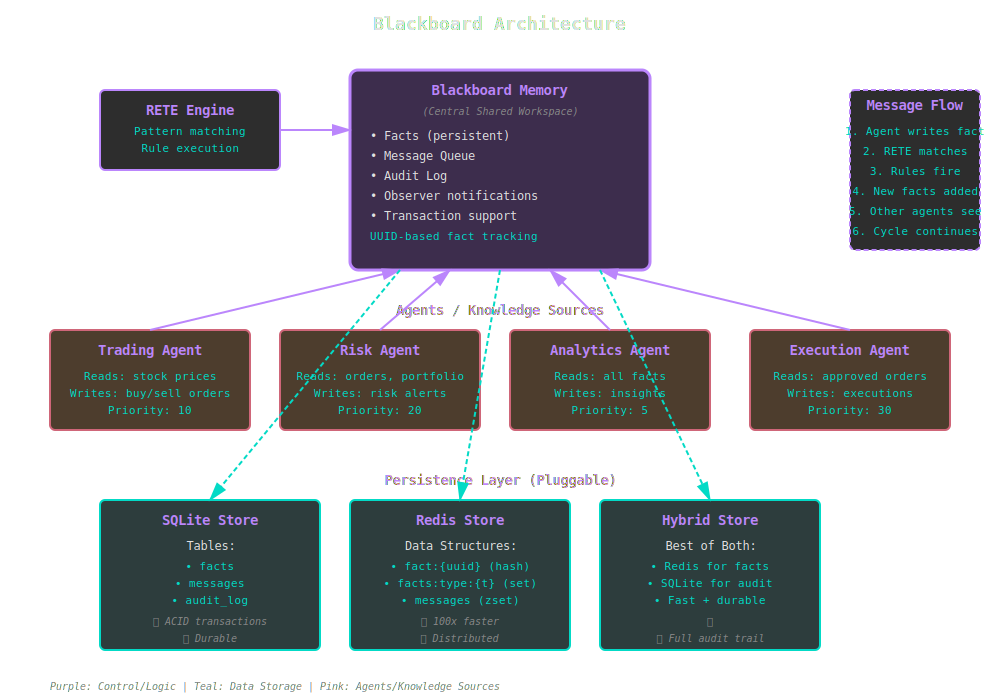

Blackboard Architecture¶
The Blackboard pattern is a powerful approach to multi-agent problem-solving where independent knowledge sources collaborate through a shared workspace.
Overview¶

Blackboard system with multiple agents reading and writing to shared persistent memory with pluggable storage backends.
Core Concept¶
The blackboard architecture consists of three main components:
- Blackboard (Memory): Central shared workspace for facts
- Knowledge Sources (Agents): Independent experts that read and write facts
- Control Component: Coordinates agent execution (often via rules)
Agents operate asynchronously, triggered by changes to the blackboard state. Each agent: - Reads relevant facts from the blackboard - Performs reasoning or computation - Writes conclusions back to the blackboard - Triggers other agents via fact changes
KBS Implementation¶
Blackboard::Memory¶
The central workspace that replaces WorkingMemory with persistence:
require 'kbs/blackboard'
# Create blackboard with SQLite backend
memory = KBS::Blackboard::Memory.new(db_path: 'knowledge_base.db')
# Add facts (persisted automatically)
fact = memory.add_fact(:stock, {
symbol: "AAPL",
price: 150.50,
timestamp: Time.now
})
# => #<KBS::Blackboard::Fact uuid="abc-123" ...>
# Query facts
stocks = memory.facts_of_type(:stock)
# => [#<KBS::Blackboard::Fact ...>, ...]
# Facts survive process restart
memory2 = KBS::Blackboard::Memory.new(db_path: 'knowledge_base.db')
memory2.facts_of_type(:stock)
# => Still there!
Implementation: lib/kbs/blackboard/memory.rb
Blackboard::Engine¶
RETE engine with persistent blackboard memory:
# Create engine with blackboard
engine = KBS::Blackboard::Engine.new(db_path: 'trading.db')
# Define rules using DSL (persisted in the database)
kb = KBS.knowledge_base(engine: engine) do
rule "buy_signal" do
on :stock, symbol: :sym?, price: :price?
on :threshold, symbol: :sym?, max: :max?
perform do |facts, bindings|
if bindings[:price?] < bindings[:max?]
# Write new fact to blackboard
fact :order,
symbol: bindings[:sym?],
action: "BUY",
price: bindings[:price?]
end
end
end
# Facts trigger rules, which create new facts
fact :stock, symbol: "AAPL", price: 145.0
fact :threshold, symbol: "AAPL", max: 150.0
run
# => Creates :order fact in blackboard
end
Implementation: lib/kbs/blackboard/engine.rb
Message Queue¶
Priority-based communication between agents:
memory = KBS::Blackboard::Memory.new(db_path: 'system.db')
queue = memory.message_queue
# Agent 1: Post high-priority message
queue.post("risk_analysis", {
alert: "High volatility detected",
severity: "critical"
}, priority: 10)
# Agent 2: Read and process messages
messages = queue.read("risk_analysis", limit: 5)
messages.each do |msg|
puts "Processing: #{msg[:data][:alert]}"
queue.acknowledge(msg[:id])
end
# Unacknowledged messages remain in queue
pending = queue.pending("risk_analysis")
Implementation: lib/kbs/blackboard/message_queue.rb
Audit Log¶
Complete history of all changes for compliance and debugging:
memory = KBS::Blackboard::Memory.new(db_path: 'audit.db')
audit = memory.audit_log
# All fact changes are logged automatically
fact = memory.add_fact(:stock, symbol: "AAPL", price: 150)
memory.update_fact(fact.id, price: 155)
memory.remove_fact(fact)
# Query audit trail
history = audit.fact_history(fact.id)
# => [
# { action: "created", timestamp: ..., data: {price: 150} },
# { action: "updated", timestamp: ..., data: {price: 155} },
# { action: "deleted", timestamp: ... }
# ]
# See what rules fired
rule_log = audit.rules_fired(limit: 10)
# => [
# { rule_name: "buy_signal", timestamp: ..., facts: [...] },
# ...
# ]
# Recent changes across all facts
recent = audit.recent_changes(limit: 20)
Implementation: lib/kbs/blackboard/audit_log.rb
Persistence Backends¶
SQLite Store (Default)¶
Best for: Single-process applications, development, small-to-medium data.
Pros: - ✅ Zero configuration (no server needed) - ✅ ACID transactions - ✅ Durable across restarts - ✅ Simple backup (copy .db file) - ✅ Full-text search capabilities
Cons: - ⚠️ Slower than Redis (still fast for most use cases) - ⚠️ Single-writer limitation - ⚠️ Not distributed
Schema:
CREATE TABLE facts (
id TEXT PRIMARY KEY,
fact_type TEXT NOT NULL,
attributes TEXT NOT NULL, -- JSON
created_at DATETIME DEFAULT CURRENT_TIMESTAMP,
updated_at DATETIME DEFAULT CURRENT_TIMESTAMP
);
CREATE TABLE audit_log (
id INTEGER PRIMARY KEY AUTOINCREMENT,
fact_id TEXT,
action TEXT NOT NULL,
timestamp DATETIME DEFAULT CURRENT_TIMESTAMP,
data TEXT -- JSON
);
CREATE TABLE messages (
id TEXT PRIMARY KEY,
topic TEXT NOT NULL,
priority INTEGER DEFAULT 0,
data TEXT NOT NULL, -- JSON
created_at DATETIME DEFAULT CURRENT_TIMESTAMP,
acknowledged BOOLEAN DEFAULT 0
);
Implementation: lib/kbs/blackboard/persistence/sqlite_store.rb
Redis Store¶
Best for: High-throughput applications, distributed systems, real-time trading.
store = KBS::Blackboard::Persistence::RedisStore.new(
url: 'redis://localhost:6379/0'
)
engine = KBS::Blackboard::Engine.new(store: store)
Pros: - ✅ 100x faster than SQLite for reads/writes - ✅ Supports distributed agents (multiple processes, machines) - ✅ Built-in pub/sub for real-time notifications - ✅ Atomic operations - ✅ TTL support for ephemeral facts
Cons: - ⚠️ Requires Redis server - ⚠️ Volatile by default (enable RDB/AOF for durability) - ⚠️ More complex deployment
Data Structures:
# Facts stored as Redis hashes
fact:{uuid} → { type: "stock", symbol: "AAPL", price: 150 }
# Indexes for efficient queries
facts:type:stock → Set of fact UUIDs
facts:active → Set of all active fact UUIDs
# Messages as sorted sets (by priority)
messages:risk_alerts → ZSet[(msg1, priority), (msg2, priority), ...]
# Audit as lists
fact_history:{uuid} → List of change records
rules_fired:all → List of rule executions
Implementation: lib/kbs/blackboard/persistence/redis_store.rb
Hybrid Store¶
Best for: Production systems needing speed + durability + audit.
store = KBS::Blackboard::Persistence::HybridStore.new(
redis_url: 'redis://localhost:6379/0',
db_path: 'audit.db'
)
engine = KBS::Blackboard::Engine.new(store: store)
Strategy: - Redis: Facts and messages (fast access) - SQLite: Audit log (durable history)
Pros: - ✅ Fast fact operations (Redis) - ✅ Durable audit trail (SQLite) - ✅ Best of both worlds
Cons: - ⚠️ Requires both Redis and SQLite - ⚠️ Slightly more complex
Implementation: lib/kbs/blackboard/persistence/hybrid_store.rb
Multi-Agent Example¶
Trading system with four specialized agents:
# Shared blackboard
engine = KBS::Blackboard::Engine.new(db_path: 'trading.db')
kb = KBS.knowledge_base(engine: engine) do
# Agent 1: Market Data Collector
rule "collect_data", priority: 5 do
on :market_open, status: true
without :stock_data, symbol: :sym?
perform do |facts, bindings|
price = fetch_current_price(bindings[:sym?])
fact :stock_data,
symbol: bindings[:sym?],
price: price,
timestamp: Time.now
end
end
# Agent 2: Signal Generator
rule "generate_signals", priority: 10 do
on :stock_data, symbol: :sym?, price: :price?
on :sma_data, symbol: :sym?, sma: :sma?
perform do |facts, bindings|
if bindings[:price?] > bindings[:sma?]
fact :signal,
symbol: bindings[:sym?],
direction: "BUY",
strength: (bindings[:price?] / bindings[:sma?]) - 1.0
end
end
end
# Agent 3: Risk Manager
rule "check_risk", priority: 20 do
on :signal, symbol: :sym?, direction: :dir?
on :portfolio, symbol: :sym?, position: :pos?
perform do |facts, bindings|
if bindings[:pos?] > 1000 && bindings[:dir?] == "BUY"
fact :risk_alert,
symbol: bindings[:sym?],
reason: "Position limit exceeded"
else
fact :approved_signal,
symbol: bindings[:sym?],
direction: bindings[:dir?]
end
end
end
# Agent 4: Order Executor
rule "execute_orders", priority: 30 do
on :approved_signal, symbol: :sym?, direction: :dir?
without :risk_alert, symbol: :sym?
perform do |facts, bindings|
execute_trade(bindings[:sym?], bindings[:dir?])
fact :execution,
symbol: bindings[:sym?],
direction: bindings[:dir?],
timestamp: Time.now
end
end
# Trigger the system
fact :market_open, status: true
fact :portfolio, symbol: "AAPL", position: 500
# Agents collaborate through blackboard
run
end
Transactions¶
Ensure atomic multi-fact updates:
memory = KBS::Blackboard::Memory.new(db_path: 'trades.db')
memory.transaction do
# All or nothing
order = memory.add_fact(:order, {
symbol: "AAPL",
action: "BUY",
quantity: 100
})
execution = memory.add_fact(:execution, {
order_id: order.id,
price: 150.50,
timestamp: Time.now
})
memory.update_fact(order.id, status: "filled")
# If any operation fails, entire transaction rolls back
end
Nested transactions are supported via reference counting.
Best Practices¶
1. Agent Specialization¶
Each agent should focus on one aspect of the problem: - ✅ Data collection - ✅ Signal generation - ✅ Risk assessment - ✅ Execution
2. Priority-Based Execution¶
Use rule priorities to ensure correct agent ordering:
data_collector: priority: 5
signal_generator: priority: 10
risk_manager: priority: 20
executor: priority: 30
3. Fact Versioning¶
Include timestamps for temporal reasoning:
engine.add_fact(:price, {
symbol: "AAPL",
value: 150,
timestamp: Time.now,
source: "market_data_feed"
})
4. Message Acknowledgment¶
Always acknowledge processed messages:
messages = queue.read("alerts", limit: 10)
messages.each do |msg|
process_alert(msg[:data])
queue.acknowledge(msg[:id]) # Important!
end
5. Audit Everything¶
Use audit log for debugging and compliance:
# When something goes wrong, trace back
audit = memory.audit_log
changes = audit.recent_changes(limit: 100)
changes.each do |change|
puts "#{change[:timestamp]}: #{change[:action]} on #{change[:fact_type]}"
end
Performance Tuning¶
Choose the Right Backend¶
| Backend | Use Case | Performance | Durability |
|---|---|---|---|
| SQLite | Development, single-process | Good | Excellent |
| Redis | High-frequency trading, distributed | Excellent | Good (with AOF) |
| Hybrid | Production systems | Excellent | Excellent |
Batch Operations¶
# Bad: Individual adds (slow)
1000.times do |i|
memory.add_fact(:reading, sensor: i, value: rand)
end
# Good: Transaction batch (fast)
memory.transaction do
1000.times do |i|
memory.add_fact(:reading, sensor: i, value: rand)
end
end
Index Strategy (SQLite)¶
-- Add indexes for frequent queries
CREATE INDEX idx_facts_type ON facts(fact_type);
CREATE INDEX idx_facts_created ON facts(created_at);
CREATE INDEX idx_messages_topic ON messages(topic, priority);
Redis Memory Management¶
# Set TTL for ephemeral facts
store = KBS::Blackboard::Persistence::RedisStore.new(
url: 'redis://localhost:6379/0',
ttl: 3600 # Facts expire after 1 hour
)
Advanced Patterns¶
Opportunistic Triggering¶
Agents activate when their preconditions are met:
# Trigger fires only when specific fact exists
kb = KBS.knowledge_base(engine: engine) do
rule "on_critical_alert" do
on :alert, severity: "critical"
perform do |facts, bindings|
notify_team(facts[0])
end
end
end
Blackboard Focus¶
Limit agent attention to relevant facts:
# Agent only sees recent stock data
kb = KBS.knowledge_base(engine: engine) do
rule "analyze_recent" do
on :stock_data,
symbol: :sym?,
timestamp: :ts?,
predicate: lambda { |f| Time.now - f[:timestamp] < 300 } # Last 5 minutes
perform do |facts, bindings|
# Process recent data only
end
end
end
Conflict Resolution¶
When multiple agents could act, use priorities:
kb = KBS.knowledge_base(engine: engine) do
# High priority: Stop-loss overrides everything
rule "stop_loss", priority: 100 do
# ...
end
# Medium priority: Risk management
rule "risk_check", priority: 50 do
# ...
end
# Low priority: Normal trading signals
rule "buy", priority: 10 do
# ...
end
end
Next Steps¶
- Network Structure - How blackboard integrates with RETE
- Persistence Guide - Choosing and configuring backends
- Blackboard Examples - Complete working systems
- Custom Persistence - Build your own backend